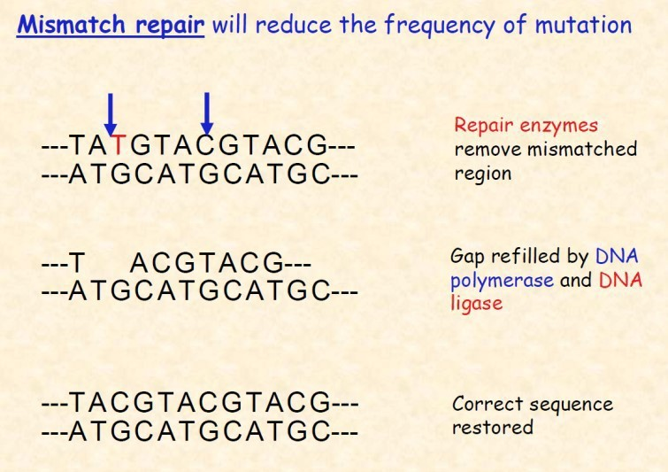

BIO103 · 第 10 章
DNA 突变与修复
DNA Mutation & Repair
虚线下划线为术语；悬停查看中文、英文与释义，完整词典见“术语”。
本章目录
本讲先说明复制保真由聚合酶校对与错配修复共同维持，再按碱基替换、移码、染色体结构改变三类讲突变及其后果，最后讲自发与诱发突变以及 MMR、NER、BER 与光复活修复。
本章要点
- DNA 聚合酶 III 的错配率约 1/1000，其中绝大多数由 3′→5′ 外切酶校对纠正。
- 仍有约 0.02% 的错误成为永久突变，其余由错配修复酶在 S 期清除。
- 突变分三类：碱基替换（点突变）、移码突变、染色体结构改变。
- 碱基替换按后果分沉默、错义、无义三种；镰状细胞病是错义突变的例子。
- 插入或缺失一两个碱基造成移码；缺失三个碱基不改变阅读框，只是少一个氨基酸。
- 自发突变来自复制错误与细胞代谢；诱发突变来自 UV、电离辐射、化学诱变剂与核苷类似物。
- 修复系统：MMR 处理复制错配，NER 处理造成螺旋扭曲的大损伤，BER 处理不扭曲螺旋的小碱基损伤，光解酶直接逆转 UV 嘧啶二聚体。
10.1 复制保真度：聚合酶校对与错配修复
DNA 复制的高保真由两道机制叠加维持。第一道是 DNA 聚合酶 III 自身：它相当准确，约每 1000 个掺入的核苷酸出现 1 个错误；其中绝大多数会被聚合酶的外切核酸酶校对exonuclease proofreading结构域（3′→5′ 方向）切除并重装，真正漏过的约 1/1000，因此最终错误率远低于单次掺入的错配率。
第二道是错配修复mismatch repair (MMR)。错配修复酶识别并替换由复制错误造成、又未被校对清除的错误核苷酸，这一过程同样发生在 S 期。讲义给出的量级是：约 0.02% 的错误最终积累为 DNA 序列上的永久突变，其余都被错配修复酶消除。
线粒体是例外：其修复系统很少甚至缺失。虽然线粒体 DNA 的复制错误机会更少，但缺乏修复意味着突变会持续累积，这被认为是衰老的一个组成部分。

L12 slide 3–6
10.2 突变的定义与后果
突变mutation是 DNA 正常碱基序列发生的改变。改变的范围可以小到一个碱基，也可以大到整段染色体的重排。讲义强调：即使只有一个碱基出错，只要位于基因的关键位点，就足以引起遗传病。
后果取决于发生突变的细胞类型。生殖细胞突变germ cells mutation可传给后代，是物种演化的原料；体细胞突变somatic cell mutations不传给后代，但与癌症相关。
DNA 损伤是不可避免的，来源包括 DNA 本身的损伤（lesions）、紫外线、电离辐射，以及正常细胞代谢的副产物或环境中的遗传毒性化学品。当突变影响到原本调控细胞分裂的基因时，细胞可能失去控制地分裂，形成肿瘤并发展为癌症。
L12 slide 5, 7
10.3 碱基替换：沉默、错义与无义
碱基替换突变base-substitution mutation指一个碱基被另一个碱基取代，其中只涉及单个碱基的又称点突变point mutation。按对蛋白质的影响，分为三种：
| 类型 | 密码子变化 | 后果 | 示例 |
|---|---|---|---|
| 沉默突变 | 变为同义密码子 | 基因型改变、表型不变 | 多个密码子编码同一氨基酸 |
| 错义突变 | 改为编码另一氨基酸 | 可中性、可有害 | 镰状细胞病：带电残基变为非极性残基 |
| 无义突变 | 变为终止密码子 | 通常有害，蛋白合成提前终止 | 截短的非功能蛋白 |
沉默突变silent mutation之所以可能，是因为遗传密码具有简并性：若干密码子编码同一个氨基酸，碱基改变不改变掺入的氨基酸，因此基因型变了而表型不变。
错义突变missense mutation使一个氨基酸被另一个取代。镰状细胞病是经典例子：血红蛋白异常，纯合子（两个等位基因都受影响）的红细胞内 Hb 聚集并沉淀，导致红细胞镰变。讲义特别指出，本例是带电残基被非极性残基取代；错义突变的后果可以是中性的，也可以是有害的。
无义突变nonsense mutation把编码氨基酸的密码子变成终止密码子，翻译提前终止，通常产生截短的无功能蛋白，因此一般有害。

L12 slide 9–12
10.4 移码突变与三碱基缺失
移码突变frameshift mutation由插入或缺失一个或两个碱基引起。由于遗传密码是三联体且无逗号，插入/缺失不是 3 的整数倍时，从突变点之后的所有密码子都被重新划分，读框整体移位，翻译出的氨基酸序列完全改变，通常产生非功能蛋白。
关键对照是“缺失三个碱基”：此时读框不变，只是少了一个密码子、少了一个氨基酸，因此不叫移码。这类“整三联体”的增减解释了为什么某些重复序列扩增不会破坏下游序列。
亨廷顿病（Huntington’s disease, HD）就是这样的例子。HD 以常染色体显性等位基因方式遗传；突变位于 4 号染色体上编码 Huntingtin（HTT）蛋白的基因内一段不稳定区域。未患病者该段只有少量 CAG 三核苷酸重复，患者则有更多重复；重复数越多，发病越早。由于 CAG 本身就是完整的三联体，重复次数增加不会造成移码，因此蛋白其余部分的氨基酸序列不受影响——讲义以此设问并给出答案：CAG 是三联体，不会导致移码。
Clean vector diagram comparing three mRNA sequences read in triplet codons: wild type with intact reading frame; a single-base insertion that shifts the frame so all downstream codons change; and a three-base deletion that removes exactly one codon while keeping the downstream frame intact. Codons drawn as grouped boxes with amino acid labels beneath. Flat 2D, thin 1.5 px strokes, muted slate blue and warm grey palette, white background, English labels, no cartoon, no gradient, no shadow.
L12 slide 13–14
10.5 染色体结构改变
第三类是染色体结构层面的改变。减数分裂中的错误，或辐射等损伤因素，可使染色体发生断裂；断裂后的片段若以异常方式重新连接，就会产生结构变异。讲义指出共有四类改变，但正文只以举例方式给出其中两类：
- 染色体易位chromosome translocation：一条染色体的片段接到另一条染色体上。
- 倒位inversion：片段方向颠倒后重新接回原染色体。
临床例子是伯基特淋巴瘤（Burkitt’s lymphoma）：这是淋巴系统（尤其是 B 淋巴细胞）的癌症，由染色体易位引起。易位把原本分开的序列接到一起，可能形成融合基因（fusion gene），使表达调控失去正常控制。
其余两类结构改变的名称，讲义正文未逐一列出；术语表另给出“染色体 rearrangement（重排）”作为总称。复习时按“断裂 → 异常重接 → 四类结构改变”的框架记忆，具体名称以课堂补充为准。
L12 slide 15–16
10.6 自发突变与诱发突变
按来源，突变分为两大类。自发突变spontaneous mutagenesis源于细胞内部：DNA 复制过程中的错误，或 DNA 中自发形成的损伤（spontaneous lesions），以及细胞代谢产生的活性分子。它们是内源性的（endogenous），无法完全避免。
诱发突变induced mutagenesis由外部因素引起，是外源性的（exogenous），包括：紫外线照射、电离辐射、化学物暴露，以及核苷类似物（nucleoside analogs）。
这一分类的意义在于可预防性：自发突变只能靠修复系统与保真机制压低，诱发突变则可以通过防护（防晒、屏蔽、避免接触诱变剂）减少。
L12 slide 17–18
10.7 物理诱变剂：紫外线与电离辐射
太阳发出的紫外线分三段：UV-A 为 315–400 nm，UV-B 为 280–315 nm，UV-C 为 100–280 nm。其中 UV-B 与 UV-C 造成直接的 DNA 损伤，典型产物是胸腺嘧啶二聚体thymine dimer：两个相邻的胸腺嘧啶残基共价连接，使 DNA 出现明显的扭结（kink）。若不被修复，这个扭结会阻碍转录与复制。
电离辐射包括 X 射线与 γ 射线。其作用方式是使分子失去电子而变成活性的自由基free radicals，自由基再与碱基反应。电离辐射有累积效应，高剂量可直接杀死细胞。DNA 还会受到活性氧reactive oxygen species（如 O₂⁻、H₂O₂）的攻击，这些强氧化剂由电离辐射及产生自由基的化学试剂生成。
电离辐射最危险之处在于造成双链断裂double-strand breaks：两条链同时断开，缺少完整的互补链作为修复模板，因而难以修复；若遗留不修，对细胞是致死的。

Clean vector diagram of a thymine dimer in duplex DNA: two adjacent thymine bases on the same strand joined by a covalent bond, the sugar-phosphate backbone bent into a sharp kink at that position, and the opposite adenine bases shown for context. Flat 2D, thin 1.5 px strokes, muted slate blue and warm grey palette, white background, English labels, no cartoon, no gradient, no shadow, no 3D perspective.
L12 slide 19–21
10.8 化学诱变剂
讲义列出四类化学诱变剂，作用机制各不相同：
脱氨基剂deaminating agents移除碱基上的氨基（NH₂）。胞嘧啶脱氨变成尿嘧啶，使原本的 C·G 配对变成 U·A，复制后固定为 T·A。
烷化剂alkylating agents给碱基加上甲基。最易被烷化的位点之一是鸟嘌呤 6 号碳上的酮基，产物 O⁶-甲基鸟嘌呤常与胸腺嘧啶错配，使原来的 G·C 配对在复制后变为 A·T。
碱基类似物base analogs在结构上与正常碱基足够相似，能被细胞摄取、转成核苷三磷酸并掺入 DNA；但结构上的细微差异使其配对不准确，复制时频繁出错。典型例子是 5-溴尿嘧啶（5-bromouracil）：它与鸟嘌呤配对而不是腺嘌呤，因此造成一个碱基的点突变。
嵌入剂intercalating agents如吖啶（acridine）能插入碱基对之间（DNA intercalation），使相邻碱基对的距离被撑开，复制时造成一个或几个碱基对的缺失或插入，从而引起移码突变。吖啶本身也用于 DNA 染色。
L12 slide 22–25
10.9 修复系统：MMR、NER、BER 与光复活
讲义把修复按发生时机分为两组：在 DNA 合成当时或紧接其后的是 DNA 聚合酶 III 的校对与错配修复mismatch repair (MMR)；在 DNA 已受损之后启动的是切除修复（核苷酸切除或碱基切除，即 NER 与 BER）以及光解酶修复。
甲基化导向的错配修复
MMR 依靠 DNA 的甲基化模式区分新旧链：亲代链已被甲基化，新合成链尚未甲基化。MutS 识别错误的碱基配对，MutL 识别甲基化的亲代链，MutH 在子链上切开错配区域；随后由 DNA 聚合酶填补缺口，连接酶封口。这样系统就知道该“改哪一条链”，避免把正确的亲代信息改掉。
核苷酸切除修复（NER）
NER 处理的是显著扭曲双螺旋的损伤，例如胸腺嘧啶二聚体或碱基上的大体积化学加合物。步骤为：损伤使 DNA 变形 → 核酸酶在损伤两侧各切一刀，移除含损伤的片段 → DNA 聚合酶填补缺口 → 连接酶封口。NER 不识别特定损伤本身，而是识别“螺旋形状不对”，这是它与 BER 最根本的区别。
碱基切除修复（BER）
BER 处理不显著扭曲螺旋的小碱基损伤，例如 DNA 中出现尿嘧啶（可由胞嘧啶脱氨产生，会造成传递性突变）；这类损伤常来自脱氨、氧化或甲基化。以 G·T 错配（常由 5-甲基胞嘧啶脱氨形成）为例：
- 特异性的 DNA 糖基化酶（DNA glycosylase）把 T 从糖-磷酸骨架上切下，只留下脱氧核糖磷酸（无碱基位点）。
- 无嘌呤核酸内切酶 I（APE1）在无碱基位点切开骨架。
- 与 DNA 聚合酶 β 相关联的无嘌呤裂解酶（AP lyase）移除脱氧核糖磷酸。
- DNA 聚合酶 β 填补缺口，连接酶封口，恢复原来的 G·C 配对。
光复活修复
DNA 光解酶DNA photolyase能直接修复 UV 造成的损伤。该机制需要可见光，尤其是光谱紫/蓝端的光，用光能打断连接两个嘧啶的共价键，使二聚体恢复为两个独立的碱基。这是少见的“直接逆转”型修复，不需要切除片段。
Clean vector four-step diagram of nucleotide excision repair: a thymine dimer distorting the DNA helix; a nuclease cutting the damaged strand at two sites flanking the lesion; the damaged oligonucleotide segment removed leaving a gap; DNA polymerase filling the gap and DNA ligase sealing the nick to restore intact duplex. Flat 2D, thin 1.5 px strokes, muted slate blue and warm grey palette, white background, English labels with step numbers, no cartoon, no gradient, no shadow.
四条通路的对照可以这样记：MMR 修“配对错”，NER 修“形状坏”，BER 修“小碱基坏”，光解酶修“UV 二聚体”。
L12 slide 26–33